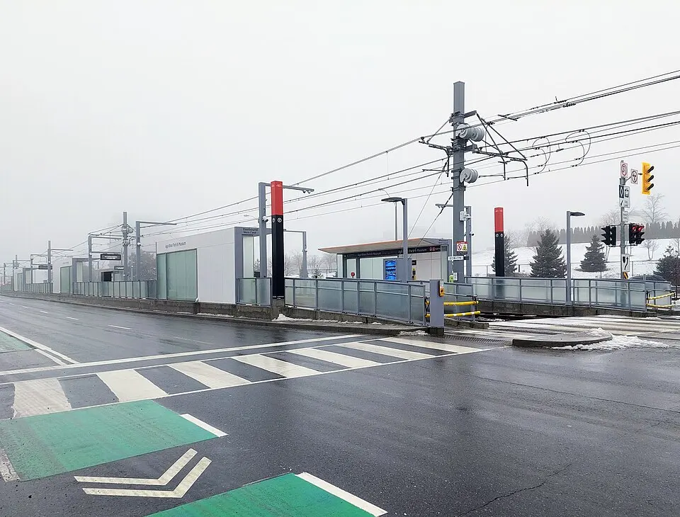

Signal
SignalStation atlas / Aga Khan Park & Museum
Station history
Aga Khan Park & Museum


Station history
Construction began in April with widening and paving Eglinton Avenue beside the future stop.
The eastbound and westbound platforms opened on Eglinton, just west of the Don Valley Parkway southbound off-ramp.